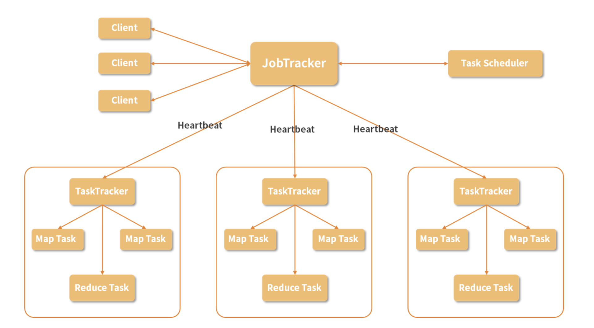

第七节 MapReduce 处理大数据
1、MapReduce 的架构
MapReduce 即是采用了这种分而治之的处理数据模式，将要进行的数据处理任务分成 Map（映射）和 Reduce（化简）这两个处理过程。
这样做最大的好处就是可以把大规模数据分布到普通性能的服务器中进行预处理，然后将处理后的结果重新进行整合，从而得到需要的结果。
除了计算本身，MapReduce 还解决了协调这些集群中的服务器的问题，
- 比如在若干台机器中执行运算的顺序、
- 计算压力的分配、
- 操作的原子性等等
跟 HDFS 一样的，MapReduce 也是采用主从结构的架构

1-1 Job
Job 即是作业，一个 MapReduce 作业是用户提交的最小单位，比如说我们在下面即将动手运行的 WordCount 运算就可以称为一个作业。
2-2 Client
Client 就是客户端，是用户访问 MapReduce 的接口，通过 Client 把编写好的 MapReduce 程序提交到 JobTracker 上。
2-3 JobTracker
在 MapReduce 中，为了实现分布式的管理架构，使用了领导和随从的模式。
而 JobTracker 就是这个体系中的领导。一个 MapReduce 集群只有一个JobTracker，这个节点负责下发作业，同时，它要收听来自很多 TaskTracker 的状态信息，从而决定如何分配工作。在这个集群中，JobTracker“既当爹又当妈”，而且只有一个，存在单点故障的可能，必须给它安排一个好点、稳定点的机器，不然如果它罢工了，将导致集群所有正在运行的任务全部失败。
2-4 TaskTracker
TaskTracker 在集群中则扮演了随从的角色，主要负责执行 JopTracker 分配的任务，同时 TaskTracker 通过 Heartbeat（心跳信息）汇报当前的状态，JobTracker 根据这些状态再进行任务的分配。
随从是具体负责工作的，人多力量大，一个集群自然可以有多个 TaskTracker。
在一个实际的节点上，会有一个 TaskTracker ，还有我们在 HDFS 环节介绍的 DataNode，这样，一个节点既是计算部分又是存储部分，在进行运算时，可以优先进行本机数据本机计算，从而提升效率。
2-5 Task
Task 称为任务，是在 MapReduce 实际计算时的最小单位，Task 有两种：MapTask 和ReduceTask，由 TaskTracker 进行启动。
2-6 Split
除了在图中出现的概念，还有一个 Split，称为一个划分，这是 MapReduce 处理的元数据信息，Split 会记录实际要处理的数据所在的位置、大小等等。在《07 | 专为解决大数据存储问题而产生的 HDFS》中，我们介绍了数据块的概念，Split 实际的数据就存储在 HDFS 的数据块中，通常我们会把 Split 的大小设置成与数据块大小一致，每次需要处理的数据存放在一个位置，这样可以减少不必要的网络传输，节约资源，提升计算速度。
了解完这么多概念，我们再回顾一下整个处理流程：
- 我们编写一个 MapReduce 程序，这可以称为一个 Job，在这个程序中往往包含较多的 Map 操作，和较少的 Reduce 操作；
- 通过 Client 把 Job 提交到 JobTracker 上，JobTracker 会根据当前集群中 TaskTracker 的状态，分配这些操作到具体的 TaskTracker上；
- TaskTracker 启动相应的 MapTask 或者 ReduceTask 来执行运算。
2-7 MapReduce具体的运算
MapTask 读取 Split 的数据，根据事先写好的程序对其中的每一条数据执行运算，比如说后面的单词计数代码，我们输入的是若干文本文件，Map 操作处理每一行文本，并为一行中的单词进行计数，然后把结果保存下来。
而在 ReduceTask 中，获取之前 Map 的预处理结果，并对数据进行分组，比如说相同单词分为一组，然后进行加和运算。对于 Reduce 的输出结果，会存储三个副本。
3、MapReduce 的特点
- 简化了分布式程序的编写
- 可扩展性强
- 容错性强
4、MapReduce 的硬伤
- 学习成本高
- 时间成本过高
MapReduce 是纯粹的批处理模式，也就是说所有的数据都是事先已经存储好的，MapReduce 只是对这些数据进行批量的处理，这对于互联网中大量的流式数据无法给到很好的支持，如果我们想要处理今天的数据，要等到今天的数据都已经存储好再进行计算，而不能随来随算。